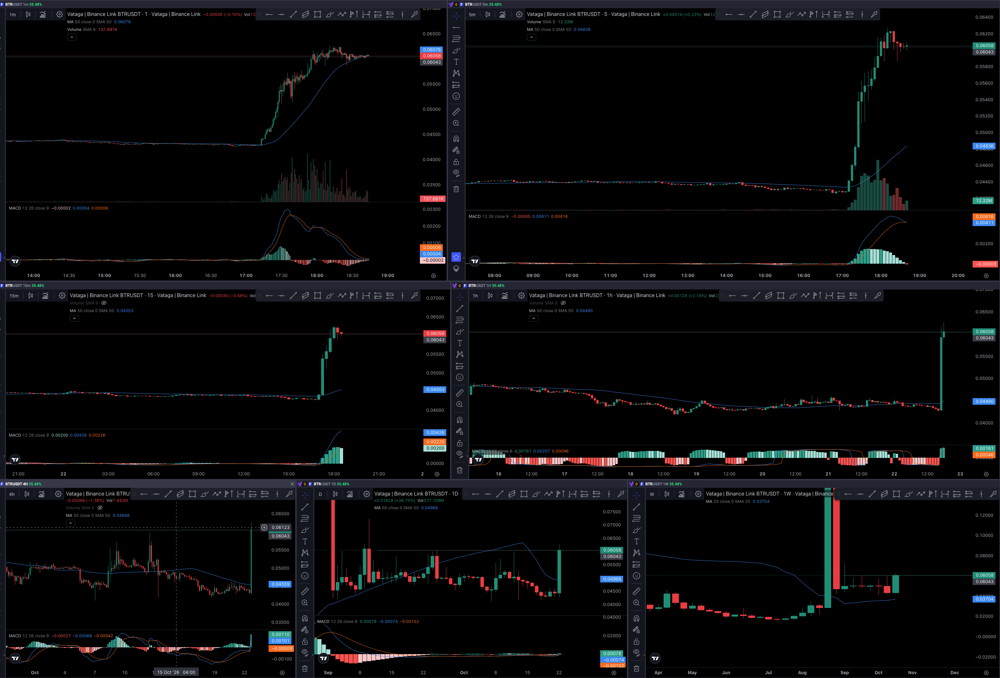

Начальный режим: ищем ускорение расстояния между ценой и MA50 15m, а не уже выросшие монеты.
Исторический replay без Binance. Сигнал вычисляется исключительно по доступным на тот момент свечам.
Начальный режим: ищем ускорение расстояния между ценой и MA50 15m, а не уже выросшие монеты.
Загрузи архив BTR для оценки сигналов.

Ручная сверка структуры и уровней. Скриншот не используется алгоритмом и не служит источником точных цен для автоматического теста.